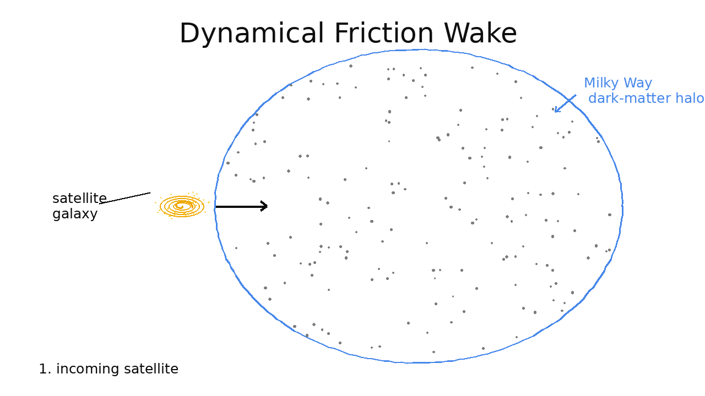
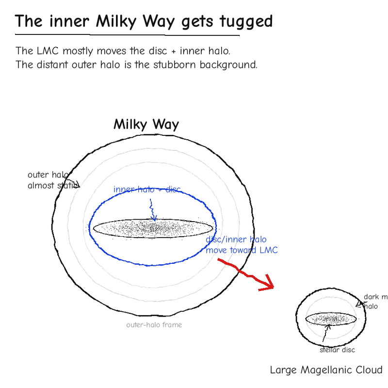

Research
-
01
The Milky Way–LMC interactionThe LMC is massive enough to pull the Milky Way's halo and disc out of equilibrium. I model these perturbations and use them to test whether the LMC is on its first infall (it is) and to constrain the masses and orbits of both galaxies from the kinematics of halo tracers.

Dynamical friction wake of an infalling satellite 
Reflex motion: inner MW vs. outer halo -
02
The HaloDance simulation suiteI built a suite of ~2,800 tailored N-body simulations of the MW–LMC system and used it to forecast how precisely Gaia astrometry, combined with spectroscopy, can measure the key parameters, reaching fractional uncertainties of roughly 11–25%.
-
03
Simulation-based inferenceI connect simulations to data with simulation-based inference, using neural density estimation techniques such as normalizing flows and flow matching to infer parameters directly, with no explicit likelihood. This captures the higher-order moments of the halo's phase-space signal that traditional summary statistics, such as the mean velocity and velocity dispersion, miss, and it lets me measure how much information about the Milky Way and the LMC the stellar halo really carries.
-
04
Stellar parameters from slitless spectroscopyI also derive stellar parameters from low-resolution (R ≥ 450) slitless grism spectroscopy with neural networks, building pipelines that turn large, low-resolution spectroscopic datasets into reliable stellar labels.
See the papers behind this work on the Publications page.